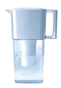

@Nifty解約
中学生だか高校生の頃入会したNifty-Serve(現@Nifty)。
長い間使っておらず、毎月300円取られるのはもったいないのでようやく解約することに。
解約しようにもパスワードを忘れていてオンラインの手続きができずずっとおっくうだった・・。
ちょっと調べてみると、電話で解約手続き用の書類を郵送してくれるらしい。
・ @nifty自動応答ダイヤルとは・・・
http://www.nifty.com/support/information/auto_dial.htm
サポートにダイヤルして、「3 解約申込書のご請求」を選択、登録されている電話番号と会員番号の５桁の数字をプッシュするだけでOk。書類になんか記入しなければいけないのは面倒だがパスワードが分からなくても解約できそうだ。良かった良かった。
しかし、@Niftyにはパソコン通信時代から会員になっていて使われていないアカウントがまだたくさんあるのではないだろうか。毎月最低３００円何もしないで収入になるのはいいなぁ・・・。
長い間使っておらず、毎月300円取られるのはもったいないのでようやく解約することに。
解約しようにもパスワードを忘れていてオンラインの手続きができずずっとおっくうだった・・。
ちょっと調べてみると、電話で解約手続き用の書類を郵送してくれるらしい。
・ @nifty自動応答ダイヤルとは・・・
http://www.nifty.com/support/information/auto_dial.htm
サポートにダイヤルして、「3 解約申込書のご請求」を選択、登録されている電話番号と会員番号の５桁の数字をプッシュするだけでOk。書類になんか記入しなければいけないのは面倒だがパスワードが分からなくても解約できそうだ。良かった良かった。
しかし、@Niftyにはパソコン通信時代から会員になっていて使われていないアカウントがまだたくさんあるのではないだろうか。毎月最低３００円何もしないで収入になるのはいいなぁ・・・。
Brita ゲット
兄夫婦に Brita を貰った。
Brita はピッチャー型の浄水器。蛇口へ取り付けたりしなくていいので気軽に使える。
水圧で押し出すんでなくて水自身の重みで自然とろ過される仕組みなので感覚的にもしっかりろ過されて、またフィルタが長持ちしそう。
水道をジャージャー使えるので楽！
スーパーでへいちいち汲みに行かなくて済むので楽！
フィルタ代をちょっと計算したけれども1リットルあたり5円にもならない。
こりゃ素晴らしい！
Brita はピッチャー型の浄水器。蛇口へ取り付けたりしなくていいので気軽に使える。
水圧で押し出すんでなくて水自身の重みで自然とろ過される仕組みなので感覚的にもしっかりろ過されて、またフィルタが長持ちしそう。
水道をジャージャー使えるので楽！
スーパーでへいちいち汲みに行かなくて済むので楽！
フィルタ代をちょっと計算したけれども1リットルあたり5円にもならない。
こりゃ素晴らしい！
・Amazon - Brita  ・Amazon - Brita 交換用フィルターカートリッジ |
献血
をしにいった。
問診をうけたり比重をはかったりして Ok がでて、いざ血を抜かれる直前に「これ見てくださいね」といういつものチラシを渡された。
・献血後は十分休息を
・直後に激しいスポーツはするな
とかとか書いてあって普段はほとんど読み流していたけれども、一つ気になる文言が
・当日の飲酒はするな
あれれ、この後飲みに行くんだけど・・・。
飲んだらどうなるのか聞いたところ、脱水症状になって具合が悪くなることがあるとか。
下戸なのでそんな飲まないと思うけど、念のため今日はやめておいた。また時間を作って行こう。
問診をうけたり比重をはかったりして Ok がでて、いざ血を抜かれる直前に「これ見てくださいね」といういつものチラシを渡された。
・献血後は十分休息を
・直後に激しいスポーツはするな
とかとか書いてあって普段はほとんど読み流していたけれども、一つ気になる文言が
・当日の飲酒はするな
あれれ、この後飲みに行くんだけど・・・。
飲んだらどうなるのか聞いたところ、脱水症状になって具合が悪くなることがあるとか。
下戸なのでそんな飲まないと思うけど、念のため今日はやめておいた。また時間を作って行こう。
BEA releases Diablo and AquaLogic product familiy
いよいよBEAの本命、Diablo (WebLogic Server 9.0) と AquaLogic ファミリがリリースされた。
・ダウンロード
http://commerce.bea.com/index.jsp
・WebLogic Server 9.0
http://e-docs.bea.com/wls/docs90/index.html
・AquaLogic
http://dev2dev.bea.com/aqualogic/
・ダウンロード
http://commerce.bea.com/index.jsp
・WebLogic Server 9.0
http://e-docs.bea.com/wls/docs90/index.html
・AquaLogic
http://dev2dev.bea.com/aqualogic/
ギャラクシー・クエスト
を観た。
http://posren.livedoor.com/a/yusukeyamamoto/detail-3458.html
主役はギャラクシークエスト、というスタートレックっぽいSFテレビシリーズに出演していた（劇中の）俳優達。
ギャラクシークエストを遠く離れた宇宙で受信して見ていた宇宙人達がそれをテレビドラマでなくドキュメンタリーと勘違いし、俳優達を英雄視して助けに求めてくる、という話。
以前から観てみたい映画リストの低い所に位置していたけど、なかなか借りてみることがなく、先日PSXのおまかせ録画で撮られておりようやく観ることが出来た。B級的な雰囲気の割にSFXが良くできている。宇宙人達の奇妙な行動やコミカルな展開がなかなか愉快。
http://posren.livedoor.com/a/yusukeyamamoto/detail-3458.html
主役はギャラクシークエスト、というスタートレックっぽいSFテレビシリーズに出演していた（劇中の）俳優達。
ギャラクシークエストを遠く離れた宇宙で受信して見ていた宇宙人達がそれをテレビドラマでなくドキュメンタリーと勘違いし、俳優達を英雄視して助けに求めてくる、という話。
以前から観てみたい映画リストの低い所に位置していたけど、なかなか借りてみることがなく、先日PSXのおまかせ録画で撮られておりようやく観ることが出来た。B級的な雰囲気の割にSFXが良くできている。宇宙人達の奇妙な行動やコミカルな展開がなかなか愉快。
フランティック
を見た。
http://posren.livedoor.com/a/yusukeyamamoto/detail-892.html
ナインス・ゲートと同じロマン・ポランスキーの作品。
導入部分が謎めいていてぐいぐい引き込まれる脚本が逸品。かなりの部分を想像にまかせるのがナインス・ゲートに似ていて有る意味良いのだが、ラストは説明が少なすぎ。でも楽しめた。
http://posren.livedoor.com/a/yusukeyamamoto/detail-892.html
ナインス・ゲートと同じロマン・ポランスキーの作品。
導入部分が謎めいていてぐいぐい引き込まれる脚本が逸品。かなりの部分を想像にまかせるのがナインス・ゲートに似ていて有る意味良いのだが、ラストは説明が少なすぎ。でも楽しめた。